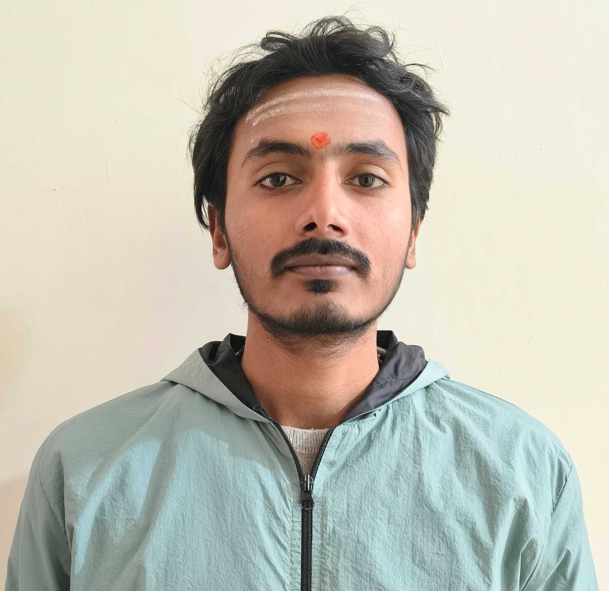

Department of Mathematics
Institute of Science
Banaras Hindu University, Varanasi, India

I am a Ph.D. Research Scholar in the Department of Mathematics at the Institute of Science, Banaras Hindu University, Varanasi, India. My research interests lie in harmonic analysis, microlocal analysis and partial differential equations. My work focuses particularly on the Stockwell transform, wavefront sets and their applications to Schrödinger equations.
Wavefront sets, singularity analysis and microlocal regularity.
Fourier analysis, Stockwell transform and time-frequency analysis.
Schrödinger equations, propagation of singularities and PDE analysis.
Journal of Mathematical Analysis and Applications, 2026.
Journal of Mathematical Physics, 66 (2025), 123510.
Banaras Hindu University
Gurukul Kangri Vishwavidyalaya, 2020
Dev Sanskriti Vishwavidyalaya, 2018
Department of Mathematics
Banaras Hindu University
Varanasi, Uttar Pradesh, India
Email: YOUR-EMAIL@example.com